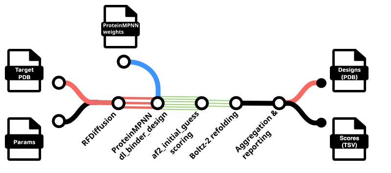
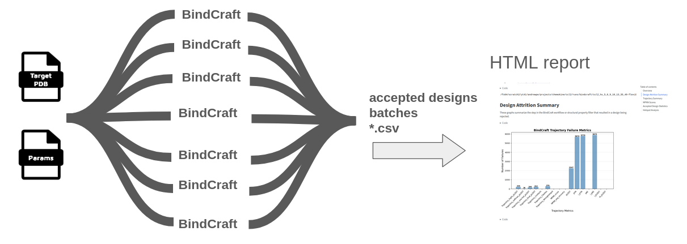

nf-binder-design

Nextflow pipelines for de novo protein binder design.
Overview
This project provides Nextflow workflows for de novo design of protein binders:
- RFdiffusion → ProteinMPNN → AlphaFold2(initial guess) → Boltz-2 refolding pipeline
- RFdiffusion Partial Diffusion → Boltz-2 refolding for diversification and optimization
- BindCraft - parallel execution across multiple GPUs
- BoltzGen - design proteins and complexes using BoltzGen
- Boltz Pulldown - an AlphaPulldown-like protocol using Boltz-2


Features
- Flexible workflow options for different binder design strategies
- HPC-ready with support for SLURM and other job schedulers
- Multi-GPU parallelization for BindCraft trajectories
- Plugin system for custom design filters
- Comprehensive reporting with HTML outputs and summary statistics
Quick Links
- Setup Instructions
- RFdiffusion Workflows
- BindCraft Workflow
- BoltzGen Workflow
- Boltz Pulldown
- Utility Scripts
- GitHub Repository
- Examples Directory
License
The pipeline code the comprises nf-binder-design is licensed under the MIT License.
Note that some dependencies, packaged externally as containers, are under less permissive licenses:
⚠️ "Commercial Use Restrictions"
Components of these workflows use RFdiffusion and BindCraft, which depend on PyRosetta/Rosetta. These are free for non-commercial use only. Commercial use requires a paid license agreement with University of Washington. See:
Citing
If you use nf-binder-design in your research, please cite:
- Perry, A., Taveneau, C., & Knott, G. J. (2025). nf-binder-design: a Nextflow pipeline for protein binder design (0.1.5). Zenodo. https://doi.org/10.5281/zenodo.16809705
and include citations for the underlying tools used in the workflow as appropriate:
-
RFdiffusion
-
Watson, J.L., Juergens, D., Bennett, N.R. et al. "De novo design of protein structure and function with RFdiffusion.", Nature, 620, 1089–1100 (2023). https://doi.org/10.1038/s41586-023-06415-8
-
Bennett, N.R., Coventry, B., Goreshnik, I. et al. Improving de novo protein binder design with deep learning. Nat Commun, 14, 2625 (2023). https://doi.org/10.1038/s41467-023-38328-5
-
-
ProteinMPNN
- Dauparas, J. et al. Robust deep learning–based protein sequence design using ProteinMPNN. Science, 378,49-56(2022). https://doi.org/10.1126/science.add2187
-
Alphafold2
- Jumper, J. et al. Highly accurate protein structure prediction with AlphaFold. Nature 596, 583–589 (2021). https://doi.org/10.1038/s41586-021-03819-2
-
BindCraft
- Pacesa, M., Nickel, L., Schellhaas, C. et al. One-shot design of functional protein binders with BindCraft. Nature, 645, 1005-1010 (2025). https://doi.org/10.1038/s41586-025-09429-6
-
Boltz
- Passaro, S., Corso, G., Wohlwend, J. et al. Boltz-2: Towards Accurate and Efficient Binding Affinity Prediction. bioRxiv (2025). https://doi.org/10.1101/2025.06.14.659707
- Wohlwend, J., Corso, G., Passaro, S. et al. Boltz-1: Democratizing Biomolecular Interaction Modeling. bioRxiv (2024). https://doi.org/10.1101/2024.11.19.624167
-
ColabFold
- Mirdita, M., Schütze, K., Moriwaki, Y. et al. ColabFold: making protein folding accessible to all. Nature Methods, 19, 679-682 (2022). https://doi.org/10.1038/s41592-022-01488-1
-
BoltzGen
- Stark, H., et al. "BoltzGen: Toward Universal Binder Design." Preprint (2025). https://hannes-stark.com/assets/boltzgen.pdf (accessed November 10, 2025).